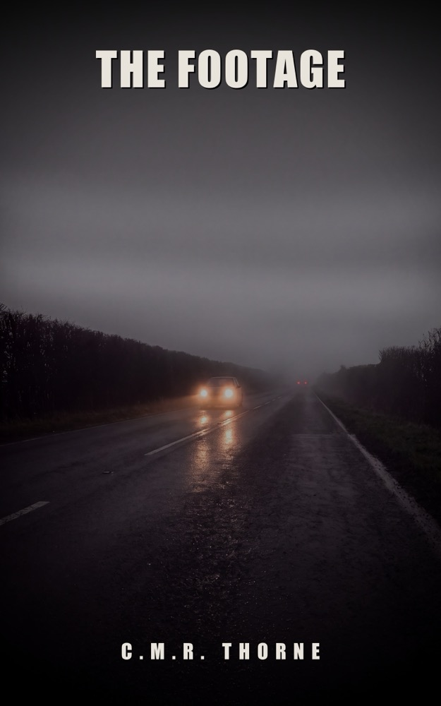

LOWLANDSPRESS
LOWLANDSPRESS

The Footage
A Thriller
An old dashcam clip proves the investigation into Niek Veldkamp's death was built on the wrong hour.
Where to buy
In twenty-five years, Marten Groenewoud has taught fourteen hundred people in his village how to drive. He knows how every one of them brakes, where they look and where they don't. When a lawyer hires him to collect old dashcam footage of the intersection where a fifteen-year-old girl was hit in June, it's just work. A stack of clips, a form, a signature at the bottom.
In that stack is a clip that has been sitting in the village group, in plain sight, for eight years. Four hundred people have watched it. They laughed and kept scrolling, because it's about some jerk driving with no lights on. Nobody looked at what's hanging in the background of the frame. It proves the investigation into Niek Veldkamp's death was built on the wrong hour.
"Nothing happened" is a thing you only say when something did.
Product details
- Publisher
- Lowlands Press
- Language
- English
- Pages (Paperback)
- 438
- Words
- 102.991
- ASIN (Ebook)
- B0HMB5Z9V6
- ISBN (Paperback)
- 979-8160921716
- ISBN (Hardcover)
- 979-8161007341
Read the opening
The opening of the book, the same pages a store lets you look inside. Read on at any of the stores above.
Prologue
DASH_20211113_004037.MP4 length 00:01:03 1920x1080 29.97 fps audio ON GPS no data shared in: Oosterwissel Rijdt Mee (412 members) 13-11-2021 08:52 40 thumbs up
The footage starts too low and too wide. Along the bottom there's a strip of dashboard that doesn't matter.
Wet two-lane road. Wipers on two. Shoulder to the left, ditch to the right, and in the distance the orange glow of a village that has mostly gone dark by this hour. In the top right corner the time is burned in, white on black, the way the factory set it and the way nobody ever changed it: *00:40:37 13-11-2021*.
There's no buildup. The headlights are already there.
They're too far left. They stay too far left. The camera watches them grow, and within a beat there's a tall pale van running without side markers, taking the center line like it owns it, and then the vehicle carrying the camera jerks right, the picture tilts, the shoulder comes up, grass, a marker post, and the sound of a man startled. One sound, short.
Then it stops.
For thirty-five seconds nothing happens except a man swearing. He swears at a windshield. He calls the van things that have nothing to do with vans. There's no fear in his voice, only the relief that looks like anger, and somewhere in the middle he says it to himself, quieter, like he's writing it down: that he had this. That thank God he had this.
He means the camera.
At forty seconds he drives on. The picture levels out, the wipers pick up again, the asphalt goes back to being a stripe that disappears under the hood. There's no oncoming traffic. There's nothing.
In the last eleven seconds the road crawls out of the polder and into the edge of a village. On the left a parking lot slides past, a low building, an empty bus shelter, and behind it a strip of gravel with a row of metal posts on it, eight of them, evenly spaced, each with a small light that bleeds into a smear in the rain.
There's a cable hanging from the fourth post.
Chapter 1
The kid's name was Sem and he sat in the car the way they all sit in it the first time: too close to the wheel, shoulders hiked up under his ears, like the thing might bite.
"Seat," Marten said.
"What's wrong with the seat?"
"It's set for someone one meter sixty. Push it back until your knee still has a bend in it with the clutch all the way down."
Sem felt for the lever, missed it, looked down, found it, and slid back so far he could barely reach the pedals. Marten let him sit with that for three seconds.
"Forward a little."
"Like this?"
"Put the clutch all the way in. All the way. Until it won't go." Marten looked at the leg. "Now your knee's straight. If you have to swerve, you'll push yourself into the seatback instead of steering the car. Two clicks forward."
It was eight fifteen on a Monday morning in September. It wasn't raining, but it had been, and the Zuivelweg lay wet and empty. Across the lot three delivery vans sat nose-in against the hedge the way they sat there every morning, and farther off a tractor turned with an amber beacon nobody needed.
"Mirrors," Marten said. "Rearview first. What do you want to see in it?"
"The back window."
"All of it. Not your own head, not the rear deck. The whole window, and you shouldn't have to move to get it." He waited until it was right. "Side mirrors. Most people angle them too far in, because then they can see their own car and that feels safe. Turn it out until your own rear bumper just disappears."
"Then I can't see any of myself."
"You already know where you are."
They pulled off the lot, around the traffic circle, and out to the industrial strip where the streetlights were numbered and where nobody came on a Monday morning. Sem wasn't bad. He did what they all do: he drove to the point where he was instead of the point where he'd be.
"Where are you looking?"
"At the road."
"You're looking at the hood. Look at the end of the street and the hood takes care of itself."
"But then I can't tell if I'm straight."
"You feel whether you're straight. Looking is for where you're going." Marten pointed two fingers at the distance. "That's not a driving lesson, that's how walking works too. When you go through a door you don't look at your feet."
At the third bend it went wrong, the way it always goes wrong somewhere. A delivery van came out of a driveway, too far forward, and Sem stomped on everything at once: brake, clutch, and a steering input he didn't need. The car ended up sideways with its nose a meter and a half from the van's driver door. The driver raised a hand by way of apology and drove on.
Sem was breathing fast. His hands were still on the wheel and his elbows were shaking.
"There," Marten said.
"Sorry."
"For what?"
"I thought... I thought I hit him."
"So did I." Marten checked the side mirror, saw nothing coming up behind them, and left the car where it was. "But nothing happened."
"Something could have happened."
"That's a different thing. That's what people say when they want a near miss to be an accident anyway." Marten pointed at the spot where the van had been. "Look. You braked at thirty. Wet surface, cold tires, no ABS, because your wheels didn't lock, or you'd have heard it. You stopped inside twelve meters. He needed another two to clear his nose. There was room. There was a lot of room."
"It didn't feel like a lot of room."
"No," Marten said. He looked in the mirror. "That's why I measure."
He had him get moving again. He let him drive the whole stretch to the bridge without saying a word, because after a moment like that nothing works as well as three minutes of silence.
At the bridge they parked. Sem pulled the parking brake with both hands, which looked ridiculous, and Marten didn't mention it.
"Out," he said. "We're going to walk around it."
"Around the car?"
"Around the car."
He'd done it on every first lesson for twenty-five years, and on every first lesson the student thought it was pointless until he was halfway.
"Tell me what you see."
"A car."
"Yes. What else."
Sem walked around the hood. "It's wet. There's mud on the sill."
"Where's the mud from?"
"The road?"
"From the shoulders they mowed last week. So what do you know now about this stretch of road?"
The kid thought about it, and it took long enough to be real. "That it could be slippery?"
"That it could be slippery where you can't see it. Keep going." Marten walked on to the back. "Where's the sun?"
"Behind us."
"And when we drive back?"
"In my eyes."
"In your eyes, and in September at nine thirty the sun sits at exactly the height where your visor does nothing. So you'll squint, and squinting costs you half your vision to the side, and you won't notice, because squinting feels like seeing better." He tapped the tailgate. "And if there were a truck parked here right now, where wouldn't he see you?"
Sem went and stood where he thought the answer was, which was two meters off, and Marten moved him with a hand on his shoulder.
"Here. And that's the only place you actually end up standing at an intersection."
They got back in. Marten drove back to the lot himself and had Sem talk through what had happened in the lesson, because that was what he started them with, so that after three months they could say why something went well instead of just that it had felt that way.
Sem's mother pulled into the parking lot without signaling. Once the kid had shut the door behind him, Marten's phone started buzzing in the door pocket. He let it go to voicemail, watched the car until it was around the traffic circle, and then called back.
"Groenewoud," Bakhuis said. "Got a pen?"
"I've got a phone."
"Yeah, yeah. Fine." Bakhuis was a claims adjuster at one of the two insurers that hired Marten, and he always talked as though he had four other people on hold, which he probably did. "I've got something different this time. Not a single-incident reconstruction. A pattern."
"Explain."
"We've got a liability claim from a family. Fifteen-year-old daughter, hit on her bike, permanent damage to her leg. We're not on the hook for the injury, that's the other party's liability coverage, but the family's lawyer is going after the road authority. Defective layout. Poor sightlines. They're saying: this wasn't an accident, this was waiting for it to happen."
"And you want to know whether that's true."
"We want to know whether there's a pattern. Everything ever recorded at that intersection. Police records, claims from us and from the others, reports to the municipality, complaints, near misses if you can find them. And footage."
"Footage of an intersection in a village."
"Dashcams," Bakhuis said. "Everybody's got one. There's one of those groups out there where they all dump it, I asked around. Anybody who asks nicely gets a pile." Paper moved on the other end. "You're from there, you live there, and you've got a stack nobody else has. How many people have you taught by now?"
"Fourteen hundred."
"Exactly. You can go ring their doorbells."
Marten looked at the bridge. A woman was riding her bike across it with two crates on the front and doing it without using her hands, which on that bridge was a bad idea and which she had probably been doing for thirty years.
"What's the rate?"
"Same as always, plus hours for the collection. Forty max, and if you're going over I want to hear about it before you're over."
"That's tight for everything ever recorded."
"Which is why I'm calling you and not an agency out of Amsterdam." Bakhuis shifted something aside. "And Groenewoud: this is going to be a file a judge reads. Everything dated, everything traceable, nothing you trimmed yourself."
"I never do that."
"I know. I'm saying it anyway."
Marten took the clipboard off the back seat, because he wrote this kind of thing down on paper, always, and put the date at the top. Monday, September third. He thought about the girls from the fall sign-ups he had booked that afternoon, about the heater in the classroom that hadn't worked since May, and about the fact that a pattern investigation would probably get him six weeks of work in a month where that came in handy.
"Give me the location," he said.
"Hang on." Bakhuis clicked something away. "Rural Oosterwissel. Intersection of the county road with the, hang on, how do you spell that. Wisseldijk."